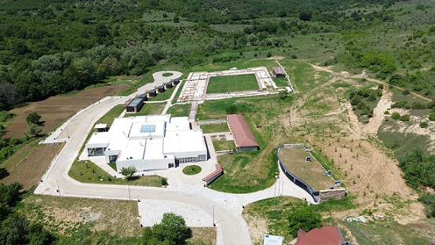
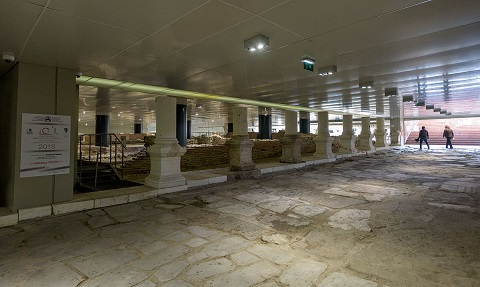

|
B U L G A R I A
La actual Bulgaria se corresponde con las antiguas provincias romanas de Moesia Superior e Inferior, Tracia y una parte pequeña de Macedonia. Núcleo de la civilización de los Tracios. En el siglo I se inició la conquista de los Balcanes por el Imperio Romano. De época romana destacamos: - El Museo de los Mosaicos de Devnya. - En Hissar, podemos ver el sistema defensivo bajo-imperial de Diocletianopolis es uno de los mejor preservados en Europa. Constaba de tres líneas defensivas: la muralla propiamente dicha, una zanja y otra muralla externa o proteichisma. Las murallas alcanzan los doce metros de altura en algunos tramos. A mediados del siglo III las invasiones bárbaras que la redujeron a cenizas. Diocleciano reconstruyó las murallas de la ciudad al estilo de las de la capital del Imperio, Constantinopla. - En Garmen destacan los restos arqueológicos de Nikopolis ad Nestum, la ciudad fundada por el emperador Trajano tras su victoria sobre los dacios en el 105-106. Destacan sus murallas del siglo IV y las termas del siglo III. - El yacimiento arqueológico de Ulpia Oescus en Gigen. Las excavaciones han permitido identificar tres complejos termales públicos, el templo de Fortuna, o el foro, dominado por el Templo de la Tríada Capitolina y la basílica. También destacamos el museo de historia de Pleven, con su mosaico de Los Aqueos. - El sistema defensivo de Diocletianopolis de época bajo imperial en el bajo Imperio Romano en Hissarya. - En Ivailovgrad destaca el yacimiento de la villa romana de Armira. Data del siglo I. A principios del siglo III la villa se extendió hacia el Este, con un espacioso triclinium y unas termas.bA mediados del siglo IV fue saqueada y quemada, posiblemente en el transcurso de las Guerras Góticas. Más info: Villa Armira
 - La tumba tracia de Kazanlak con su Museo y el Valle de los reyes Tracios. - La fortaleza romana de Iatrus en Krivina. Fue construido a principios del siglo IV. Fue destruido por los hunos en torno al 440. Erigido nuevamente en torno al 500 por Justiniano. A principios del siglo VII fue destruido por los avaros, levantándose posteriormente sobre sus ruinas un poblado búlgaro. - En Kula se localizan las ruinas de Castra Martis de época de Diocleciano. - Las termas romanas y el recinto fortificado de Kyustendil. Famoso por sus fuentes termales con una temperatura de 73 ºC, en Pautalia se hallaba un enorme complejo termal y religioso dedicado al dios Asclepio. las segundas mas grandes de Bulgaria. Datan siglo II-III. En el siglo V ante las crecientes incursiones bárbaras, se construyó la fortaleza de Hissarluka, que mantuvo su función militar hasta el siglo XV. - El campamento militar de Lovech. - En Lomets destaca el fuerte romano de Sostra. - En Nessebar destacan las murallas, las termas y el Museo de época bizantina. - En Nikyup se localiza el Yacimiento arqueológico de Nicopolis ad Istrum. - En Pavlikeni se localizan los restos de una villa romana. En marzo de 2018 se encontraron 5 espejos de plomo. - Plovdiv. La antigua Philippopolis. En el 72 la ciudad pasó a formar parte del Imperio Romano tras el asedio del general Terentius Varo Lukulus. Ulpia Trimontium (ciudad sobre tres colinas: Taxim tepe, Nebet tepe y Dzhambaz tepe), se convirtió en la ciudad más importante de la provincia tracia, pasando por ella la Via Militaris de Vindobona (Viena) a Constantinopla (Estambul). Destacamos su teatro, circo, murallas, foro, basílicas y museo. En el Centro Cultural Trakart hay una muestra permanente de mosaicos Fotos: Ernesto Sardón
- Los vestigios del fuerte tardorromano de Kovachevsko Kale en Popovo. - En Razgrad destacamos olvidar el Yacimiento arqueológico de Abrittus. Antiguo asentamiento tracio, en el siglo I fue conquistado por los romanos, que establecieron un campamento militar. Las excavaciones arqueológicas han sacado a la luz 29 de las 35 torres anexas al perímetro amurallado, así como tres de las cuatro puertas de acceso a la ciudad. Todos los hallazgos arqueológicos se exhiben en el Museo de Razgrad. - En Sveshtari destaca la la tumba tracia del siglo III a.e.c. - El fuerte romano de Sexaginta Prista en Ruse y su Museo con el Tesoro de Borovo. - En Silistra destacan las murallas, los restos de la villa romana y la tumba de la antigua Durostorum. - En la capital Sofia, la antigua de Serdica se vincula con la tribu tracia de los Serdi. En el 29 a.e.c. pasó a formar parte del Imperio Romano. Municipium con Trajano, con la denominación Ulpia Serdica. Fue destruida por los hunos en el 447 siendo posteriormente reconstruida por el emperador bizantino Justiniano I. Destacamos el yacimiento del decumanus maximus, la puerta oriental, la rotonda romana, el anfiteatro y su Museo arqueológico. Fotos: Ernesto Sardón
 - El complejo del foro romano, localizado en el centro de Stara Zagora. Destacael decumanus maximus, que cuenta con las huellas de 36 tiendas, un teatro – anfiteatro, decorado con columnas y arcos, y con nueve filas de asientos de piedra; las termas, del siglo II, la puerta occidental de la ciudad y parte del lienzo amurallado. - La fortaleza romana el siglo I de la ciudad de Tutrakan. - En Svishtovb destaca el Parque arqueológico de Novae. - El Museo de las termas romanas de Varna.
|